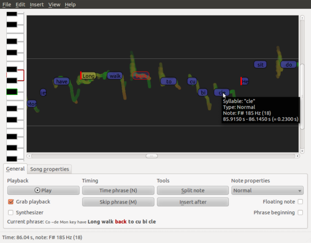

Composer

Composer is a song editor for creating (and converting) notes for music games in various formats. It attempts to make the process easy by automating as much as possible while providing a simple and attractive interface to do the remaining manual work.
Key features of Composer include:
- Song pitch analysis based on the esteemed algorithms from Perfomous.
- Zoomable interface to quickly get an overview or doing very precise timing.
- Possibility to synthesize the notes to get a feel of their "sound".
- Import/export in various formats including:
- SingStar XML
- UltraStar TXT
- Frets on Fire MIDI
Composer has a rather distinguished workflow: for example, the lyrics are imported as a whole and each time you manually put a note in place, the others automatically adjust to take use of the new information in providing a better guess of the pitch and timing. In a sense, you are not actually creating a song, but fixing and tuning the result of what the computer thinks the notes should be like.
Downloads are available at the download page. More information and building instructions can be found from the wiki.